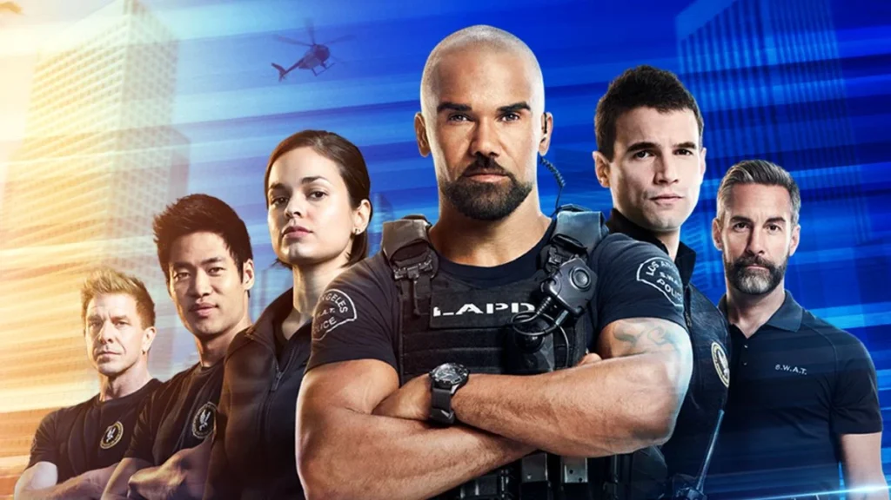
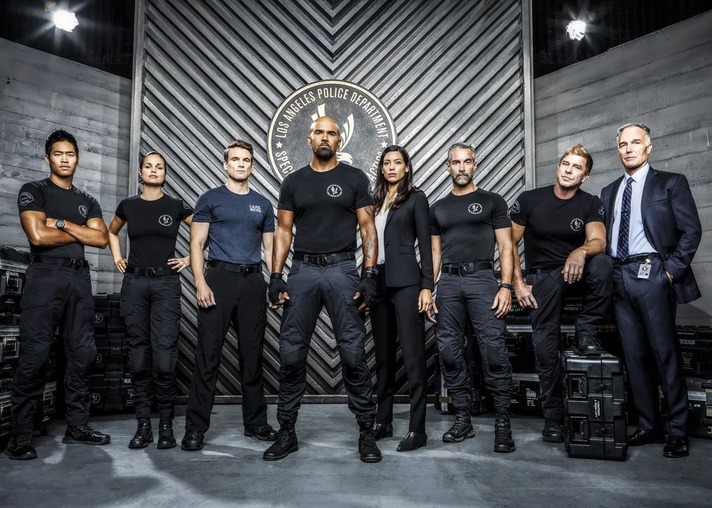
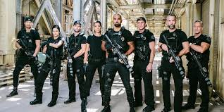

Trailer
Sinopse
A série S.W.A.T. acompanha Daniel "Hondo" Harrelson, um tenente da S.W.A.T. local nascido e criado em Los Angeles, encarregado de liderar uma unidade tática especializada. Dividido entre a lealdade às ruas onde cresceu e o dever para com seus colegas oficiais, Hondo se esforça para preencher a lacuna entre os dois mundos. A unidade de Hondo enfrenta missões perigosas, desde resgates de reféns até operações antiterroristas, utilizando táticas avançadas e trabalho em equipe para proteger a cidade.
Elenco
Imagens


